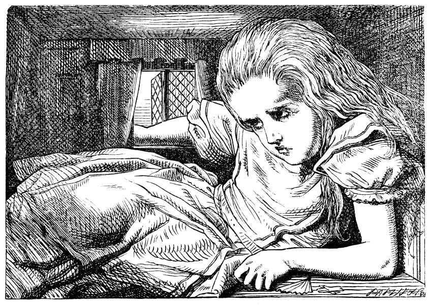

and she grew no larger: still it was very uncomfortable, and, as there seemed to be no sort of chance of her ever getting out of the room again, no wonder she felt unhappy.
'It was much pleasanter at home,' thought poor Alice, 'when one wasn't always growing larger and smaller, and being ordered about by mice and rabbits. I almost wish I hadn't gone down that rabbit-hole--and yet--and yet--it's rather curious, you know, this sort of life! I do wonder what CAN have happened to me! When I used to read fairy-tales, I fancied that kind of thing never happened, and now here I am in the middle of one! There ought to be a book written about me, that there ought! And when I grow up, I'll write one--but I'm grown up now,' she added in a sorrowful tone; 'at least there's no room to grow up any more HERE.'
'But then,' thought Alice, 'shall I NEVER get any older than I am now? That'll be a comfort, one way--never to be an old woman--but then--always to have lessons to learn! Oh, I shouldn't like THAT!
'Oh, you foolish Alice!'
she answered herself. 'How can you learn lessons in here? Why, there's hardly room for YOU, and no room at all for any lesson-books!'
And so she went on, taking first one side and then the other, and making quite a conversation of it altogether; but after a few minutes she heard a voice outside, and stopped to listen.
'Mary Ann! Mary Ann!' said the voice. 'Fetch me my gloves this moment!' Then came a little pattering of feet on the stairs. Alice knew it was the Rabbit coming to look for her, and she trembled till she shook the house, quite forgetting that she was now about a thousand times as large as the Rabbit, and had no reason to be afraid of it.
Presently the Rabbit came up to the door, and tried to open it; but, as the door opened inwards, and Alice's elbow was pressed hard against it, that attempt proved a failure. Alice heard it say to itself 'Then I'll go round and get in at the window.'
'THAT you won't' thought Alice, and, after waiting till she fancied she heard the Rabbit just under the window, she suddenly spread out her hand, and made a snatch in the air. She did not get hold of anything, but she heard a little shriek and a fall, and a crash of broken glass, from which she concluded that it was just possible